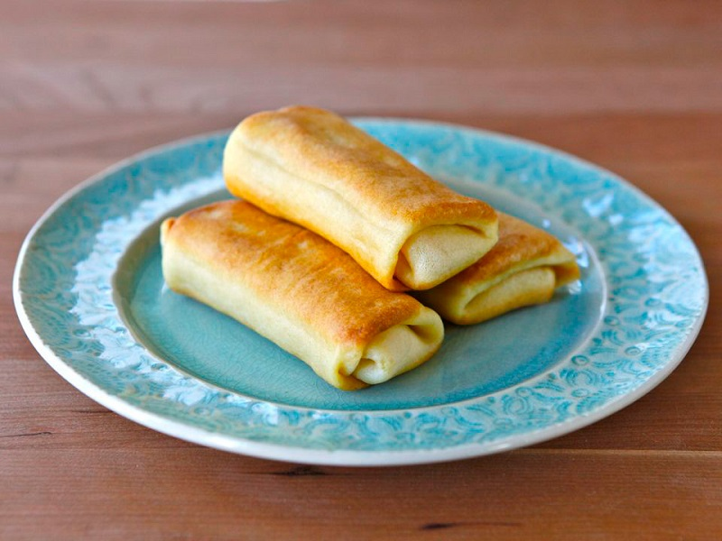

Cheese Blintzes

Mom's cheese blintzes...a party favorite!
These blintzes can be made ahead and frozen in an airtight container. Do not thaw them before baking!
INGREDIENTS
- 1 (1 pound) loaf white bread
- 4 tablespoons white sugar
- 2 teaspoons ground cinnamon
- 2 (8 ounce) packages cream cheese, softened
- 2 tablespoons milk
- 1 teaspoon vanilla extract
- ½ cup butter, melted
- 1 pint sour cream
PREPARATIONS
- Preheat oven to 350 degrees F (175 degrees C). Spray a cookie sheet generously with non-stick cooking spray.
- Trim crusts from bread and roll the slices flat.
- In a small bowl combine sugar and cinnamon to make a mixture